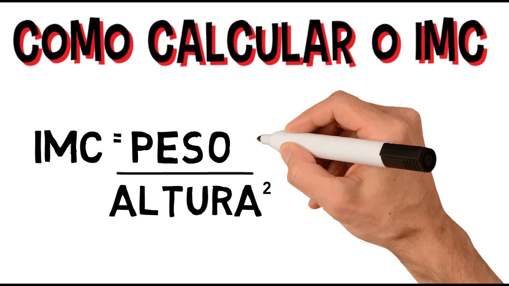

Qual é o IMC correto
Normal, quando o resultado está entre 18,5 e 24,9 kg/m2;
Magreza, quando o resultado é menor que 18,5 kg/m2;
Sobrepeso, quando o resultado está entre 24,9 e 30 kg/m2;
Obesidade, quando o resultado é maior que 30 kg/m2.
Sua altura:
Enviar
Seu peso:
Enviar
